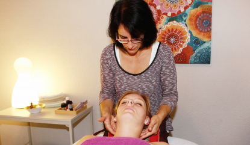
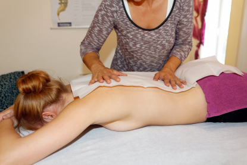
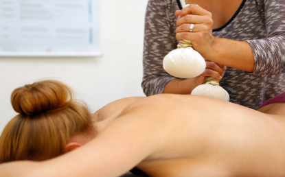
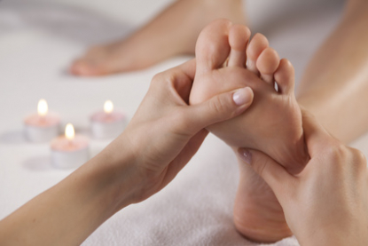

Therapien
Klassische manuelle Therapien
Bedingt durch den Arbeitsalltag, leiden inzwischen immer mehr Menschen unter „Rücken“, aber auch Schulter-, Knie- und Hüftprobleme nehmen zu.
Mehr erfahrenNaturheilpraxis in Krefeld
Ich lege besonderen Wert darauf, Sie als Individuum zu betrachten und zu behandeln.
Beschwerdefinder
Wählen Sie ein Thema. Die passenden Behandlungen erscheinen sofort. Welche davon für Sie richtig ist klären wir im ersten Termin.
Therapien
Bedingt durch den Arbeitsalltag, leiden inzwischen immer mehr Menschen unter „Rücken“, aber auch Schulter-, Knie- und Hüftprobleme nehmen zu.
Mehr erfahren
Therapien
Abgeleitet vom lateinischen infundere: hineingießen wird mit Infusionstherapie eine kontinuierliche Verabreichung von Flüssigkeit direkt in die Blutbahn zu medizinischen Zwecken bezeichnet. Je nach Ursache zur Infusion bzw. medizinischem Zweck wird die Flüssigkeit mit Medikamenten, Makro- oder Mikronährstoffen angereichert. Auch ein Ausgleich des Flüssigkeitshaushaltes kann durch Infusion erreicht werden.
Mehr erfahren
Therapien
Seit einigen Jahren hat sich die Wissenschaft intensiv mit den Faszien beschäftigt. Faszien sind bindegewebige Umhüllungen von Muskeln und sorgen für geschmeidige Beweglichkeit. Sind die Faszien verhärtet, stellen sich Verkrampfungen ein, welche durch gezielte Behandlungen auflösbar sind. Neben Rolfing stellt auch die ISBT Bowen Therapie eine dieser sehr erfolgreichen Formen dar und wird von mir in meiner Praxis im Rahmen eines gesamtheitlichen Konzeptes angeboten.
Mehr erfahren
Therapien
Neben der herkömmlichen Methodik, Schmerzen mittels Medikamente zu behandeln, gibt es noch den Bereich der alternativen Schmerztherapie. Besonders chronische Schmerzpatienten scheuen die Nebenwirkungen einer Dauermedikation und suchen für sich andere Wege, um mit beispielsweise Migräne, Bewegungsschmerzen oder Rückenproblemen umzugehen.
Mehr erfahren
Therapien
Die Behandlung mittels Schröpfgläsern ist schon seit 3500 Jahren aus dem alten Mesopotamien bekannt. In Griechenland galten Schröpfgläser aufgrund ihrer hohen Wirkung als Symbole für die ärztliche Heilkunst. Heute wird in der Naturheilkunde das Schröpfen nach wie vor gerne praktiziert.
Mehr erfahren
Manuelle Therapien
Die nach ihm benannte Dorntherapie geht zurück auf den Allgäuer Volksheiler Dieter Dorn im Jahr 1975. Er erfuhr Linderung am eigenen Körper und entwickelte daraus die sehr erfolgreiche Behandlung.
Mehr erfahren
Manuelle Therapien
Bei der Breuss-Massage handelt es sich um eine energetisch manuelle Therapie, welche häufig in Verbindung mit der Dorntherapie angewandt wird. Die Wirbelsäule wird durch spezielle Techniken sanft gestreckt und durch den entstehenden Raum werden die Zwischenwirbelscheiben „belüftet“. Die Regeneration der Bandscheiben wird unterstützt durch das zur Massage verwendete Johanniskrautöl.
Mehr erfahrenManuelle Therapien
Gerade beim Skribben handelt es sich um eine traditionelle manuelle Therapie, die jahrelang in Vergessenheit geraten war. Das Skribben entspricht der Tradition von mitteleuropäischen Sehnensetzern und Knochenbrechern; es ist in seiner Behandlungsform auch unter anderen Namen, z.B. sanfte Chiropraktik nach Marienhoff, zu finden.
Mehr erfahren
Manuelle Therapien
Auslöser für immer wiederkehrende Beschwerden können im Ist-Zustand des Individuums liegen. Damit ist eine Kombination aus körperlichem und seelisch-geistigem Befinden gemeint. Hier greift die Wirbelsäulen-Meridian-Balance als ausgleichende Therapie ein.
Mehr erfahrenInfusionstherapien
Vitamin C (Ascorbinsäure) wird im Körper bei sehr vielen Prozessen benötigt. Als Antioxidationsmittel sorgt es im Blut, im Gehirn, in Körperzellen und sogar im Zellkern dafür, dass freie Radikale gefangen und eliminiert werden. Desweiteren dient Vitamin C als Gefäßschutz, es hält das Blut dünnflüssiger und verhindert die Ablagerung von z.B. Cholesterin. Dadurch wirkt es vorbeugend bei allen mit Arteriosklerose verbundenen Krankheiten wie Angina Pectoris, Bluthochdruck oder Schlaganfall. Auch das Bindegewebe wird durch das Verschweißen von Eiweißen und anderen Substanzen zu Kollagenfasern durch Vitamin C gestärkt. Kollagenfasern sorgen zum einen für die Elastizität von Haut, Bändern und Sehnen und zum anderen für die Wundheilung.
Mehr erfahren
Infusionstherapien
Vitamin B12 (Cobalamin) ist im Körper ein wichtiger Faktor zur Blutneubildung. Außerdem wird es zur Zellteilung und zum Wachstum benötigt. Daraus ergibt sich der gesteigerte Bedarf in Schwangerschaft und Stillzeit. Leider kann Vitamin B12 nicht durch den Darm direkt aufgenommen werden, es braucht dazu den im Magen gebildeten „Intrinsic factor“. Dadurch kann es zu schweren Mangelzuständen als Folge einer Magenschleimhauterkrankung kommen. Aber auch Darmerkrankungen wie Wurmbefall, Hepatitis, Antibiose über einen längeren Zeitraum sowie Alkohol- und Nikotinmissbrauch können zu einem Mangel an Vitamin B12 aufgrund der schlechten Aufnahme im Darm führen.
Mehr erfahren
Faszien Therapie
Ihren Namen verdankt die ISBT-Bowen Therapie ihrem Gründer, dem Australier Thomas A. Bowen (1916-1982). Lange bevor die Wissenschaft die Bedeutung der Faszien entdeckte, fing er an, als selbstbezeichneter Osteopath diese über Punkte zu behandeln. Es handelt sich bei der Bowen-Therapie um eine sanfte manuelle Heilmethode, in der natürliche Abläufe der Muskel- und Faszienfunktion wiederhergestellt werden. Kleinste Bowen-Moves regen die betroffenen Körperbereiche an, ihren ursprünglichen Spannungszustand wieder herzustellen. Wirken die gesetzten Impulse nach, erreicht man eine Entspannung, wodurch Schmerzreize und daraus resultierende Verspannungen sich auflösen können. Es werden Dysbalancen, Haltungsschäden und Beschwerden des Bewegungsapparates (z.B. Golf- / Tennisarm oder Karpaltunnelsyndrom) behandelt.
Mehr erfahren
Wellness-Massagen
Die Behandlung mit kostbaren Duftstoffen war schon vor der Antike bekannt und erfreut sich in Form der Aromaöl-Massage heute neuer Beliebtheit.
Mehr erfahren
Wellness-Massagen
Die Ursprünge der Honig-Massage liegen in Tibet und Russland. Die hohe Wirksamkeit des Honigs war jedoch schon im alten Ägypten bekannt, orientalische Frauen nutzten ihn bereits früh zur Schönheitspflege.
Mehr erfahren
Wellness-Massagen
Bei der Hot Stone-Massage werden sowohl im Wasserbad auf über 50 Grad erhitzte Basaltsteine als auch kühle Marmorsteine verwendet. Dadurch entsteht eine Kombination aus Ganzkörpermassage, Temperaturreizen und Energiearbeit.
Mehr erfahren
Wellness-Massagen
Die Ursprünge der Kräuterstempel-Massage liegen im ost-asiatischen Raum. Besonders in ayurvedischen Behandlungen wurden sie bereits früh erwähnt.
Mehr erfahren
Wellness-Massagen
Cellulite ist nicht schön: Sie kann bis zur Reduktion des Selbstbewusstseins und zur Einschränkung im täglichen Leben führen. Zum Glück kann man gegen die so genannte Orangenhaut etwas tun. Es handelt sich hier um Fetteinlagerungen im Bindegewebe, die durch stete Massage, unterstützt durch Bewegung und gesunde Ernährung, reduziert werden können.
Mehr erfahren
Wellness-Massagen
In der heutigen Zeit sind unsere Füße enormen Belastungen ausgesetzt. Wir gehen in Schuhen über asphaltierte Wege und Strassen, was nicht den natürlichen Anforderungen unseres Körpers entspricht. Deshalb dient die Fußmassage nicht nur dem Wohlbefinden, sondern auch der verdienten Pflege und Zuwendung unserer Füße.
Mehr erfahren
Wellness-Massagen
Die Fußreflexzonen-Massage ist eine Besonderheit unter den Fußmassagen. Gemäß der chinesischen und anderen asiatischen Medizinformen wurde schon von altersher der Zusammenhang zwischen jedem einzelnen Körperteil / Organ und dem dazugehörenden Reflexpunkt am Fuß erkannt. Hier ist es nun möglich, entweder stimulierend oder beruhigend nur über die Füße den Menschen zu behandeln und die Symptome des Patienten zu lindern.
Mehr erfahren
Ästhetische Medizin
Mit der Ästhetischen Medizin werden die Pfade der Gesundheit verlassen; hier geht es primär um Schönheit. Aber ist nicht auch die eigene Wahrnehmung und das Mit-sich-im Reinen-sein ein wichtiger Baustein unseres subjektiven Wohlgefühls? Um dieses zu unterstützen, biete ich in meiner Praxis faltenreduzierende Unterspritzungen und auffüllende Behandlungen an. Eingesetzt wird nur der körpereigene Bausteine Hyaluron.
Mehr erfahrenZu dieser Auswahl ist nichts hinterlegt. Rufen Sie mich an und wir sprechen darüber.
„medicus curat, natura sanat“Hippokrates
Der Arzt behandelt, die Natur heilt (lat), wusste schon im Altertum der griechische Arzt Hippokrates. In diesem Sinne sollen in meiner Naturheilpraxis die Selbstheilungskräfte des Körpers aktiviert werden. Dazu stelle ich Ihnen im folgenden verschiedene Therapieformen vor.
Über mich
Mein Anliegen als Heilpraktikerin ist es, mit Ihnen gemeinsam einen Weg zu gehen, der zur Erhaltung Ihrer Gesundheit führt. Ich behandle also nicht die Symptome oder die Krankheit, sondern Menschen, deren Körper aus welchen Gründen auch immer Krankheitsträger geworden sind.
Um diese Ursachen herauszufinden und zu behandeln, stehen in meiner Praxis unterschiedliche Diagnoseverfahren und Therapien zur Verfügung. Welche Therapieform in jedem Einzelfall die richtige und dem Individuum entsprechende Behandlung darstellt werden wir in den ersten Terminen festlegen. Hierbei ist zu beachten, daß bei gleicher Symptomatik zweier Patienten durchaus zwei verschiedenen Therapien Anwendung finden, wenn die Ursache des Problems eine andere ist.
Wir gehen Ihre Beschwerden durch. Danach schlage ich Ihnen eine Therapieform vor. Rufen Sie an oder schreiben Sie mir.